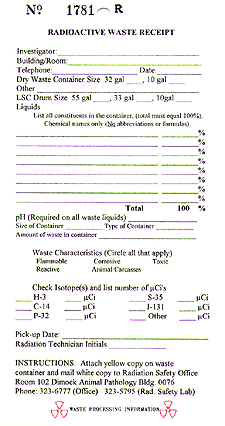

|
All radioactive waste generated in medical procedures and research is collected by staff from the Radiation Safety Office.
Prior to contacting the Radiation Safety Office for a waste pick-up ensure that the radioactive waste is labeled, placed in the appropriate container and separated according to waste type and radioisotope. Guidelines for the proper disposal of radioactive waste may be found in Appendix G of the Radiation Safety Manual.
It is important not to mix radioactive waste types (i.e., dry solid waste, liquid waste, liquid scintillation vials and animal carcasses) . This could result in the radioactive waste vendor not accepting the University's waste or additional cost for the disposal of the waste.
You should also separate long lived waste from short lived waste. The following provides guidelines for mixing different waste types for the common radioisotopes used in the laboratory.

Liquid Waste:
Liquid Scintillation Vials:
Completing Radioactive Waste Receipt for:
Liquid Scintillation Vials: Write in the investigator's name, the building and room, telephone number and date. Check off the LSC drum size and isotope(s) and list the number of uCi's. Send in liquid scintillation vial drum sheet with ticket.
Liquid Waste: Write in the investigator's name, the building and room, telephone number and date. List all the non-radioactive constituents in the container, the percent abundance, the ph of the liquid, the size and type of container, and the amount of liquid. Finally list all
radioisotopes and quantities. | ||
| ||